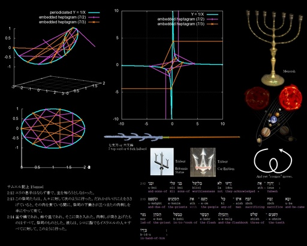

<!DOCTYPE html>
<html lang="ja">
<head>
<meta charset="UTF-8">
<meta name="viewport" content="width=device-width, initial-scale=1">
<meta name="viewport" content="width=device-width, initial-scale=1">
<title>七支刀って剣？ その３ ― 七芒星の埋め込み - JRF ブログ退避所</title>
<link rel="stylesheet" href="../../../style.css">
</head>
<body>
<nav><a href="../../../index.html">TOP</a> | <a href="../../../index/2010/12.html">2010年12月</a> | <a href="../../../index/column.html">雑記</a></nav>
<article data-pagefind-body data-pagefind-meta="種別:雑記">
<div data-pagefind-meta="投稿月:2010年12月" style="display:none"></div>
<div class="meta">
<table class="meta-table">
<tr><th>種別</th><td>[column] <span class="cocolog-id">cocolog:66440828</span></td></tr>
<tr><th>セクション</th><td>JRF の私見：雑記</td></tr>
<tr><th>日時</th><td><a href="../../../index/2010/12.html">2010年12月27日 21:46:29</a></td></tr>
<tr><th>元URL</th><td><a href="http://jrf.cocolog-nifty.com/column/2010/12/post.html" class="ext-link"><span class="original-url">http://jrf.cocolog-nifty.com/column/2010/12/post.html</span></a></td></tr>
<tr><th>タグ</th><td><a href="../../../index/tag/tag_0144.html" class="tag-link">[精神分裂病]</a> <a href="../../../index/tag/tag_0106.html" class="tag-link">[情報工学・コンピュータ科学]</a> <a href="../../../index/tag/tag_0126.html" class="tag-link">[歴史]</a> <a href="../../../index/tag/tag_0056.html" class="tag-link">[デスクトップ壁紙]</a></td></tr>
</table>
</div>
<h1>七支刀って剣？ その３ ― 七芒星の埋め込み</h1>
<div class="art-tools" data-pagefind-ignore><button type="button" id="btn-copy">原文をコピー</button><span class="tools-msg" id="tools-msg"></span></div>
<pre class="body">七支刀(または六叉鉾)にたまたま関心を持ち、いくつか記事を書いた(その１、その２)。そこでは六叉鉾は実用的なものだったのではという方向を示唆したが、その後、世界的なシンボルとして「六叉」の槍状のものがあることを知り、今度は(主に王権の)シンボルとしての意味に関心を向けた記事も書いてみることにした。また、7 でありかつ 6 であるというテーマに神秘的なものを感じ、それについて絵というか図を創作してみる。

■トライデント
  
『旧約聖書 サミュエル記上 2:12-14』に「ベリアルの息子」といった表現と、&lt;ruby&gt;&lt;rb&gt;三叉&lt;/rb&gt;&lt;rt&gt;みつまた&lt;/rt&gt;&lt;/ruby&gt;のフォークが出てくる。

  2:12エリの息子はならず者で、主を知ろうとしなかった。
  2:13この祭司たちは、人々に対して次のように行った。だれかがいけにえをささげていると、その肉を煮ている間に、祭司の下働きが三つまたの肉刺しを手にやって来て、
  2:14釜や鍋であれ、鉢や皿であれ、そこに突き入れた。肉刺しが突き上げたものはすべて、祭司のものとした。彼らは、シロに詣でるイスラエルの人々すべてに対して、このように行った。
    
「ベリアルの息子」は、新共同訳では「ならず者」と訳されているが、「ベリアル」自体でハム・セム語的には「野ヤギの子」、「son of a bitch」といった意味を持っているようにも読めそうだ。この読み方は、「ベリアル」を「バル イアル」と分けたのだが、もとは「バル エル」すなわち「神の子」または「超人」の意があるのかもしれない。すると、その後のサミュエル記の成りゆきも考慮すると、これは、ある種のメシア信仰・王者待望論者であったということを示唆しているのかもしれない。

彼らが祭祀で使う「三つまたの肉刺し」の部分のヘブライ語は、間違った読みかもしれないが、英語にすると &quot;the fork of three of the two&quot; のようになっていて、実は六叉の鉾と読めなくもない。

現代のイギリスはプリマスにあるブリタニアの像は、ポセイドンの武器たるトライデントを持っているそうだ。このサイトに、興味深い記事とともにブリタニアの写真があるが、その三叉の鉾たるトライデントをよく見ると、三つの刃の先がさらに細かく分かれており、「又」の数だけ数えると、六叉と見ることもできる。

また車のトライデントのエンブレムを見ると、「矢尻」に「かえし」があり、そのかえしの部分も「又」と考えると、これも六叉になっている。

さらに、旧約聖書の文脈では当然、ユダヤ教の儀式で使われる七本のローソクが立てられる燭台「メノラー」が「又」は六つであることが思い出される。

(ただ、トライデントが必ず六叉になってるとは限らず、ウクライナの国章に描かれたものなどはそうなってないように観える。)

なぜ、こんなシンボルなのか、その詳しい意味は私にはわからない。以前、三つ又の武器を小説『水竜狩り』で、アブドバルという主人公に持たせたことがあるが、こういった武器は同時に軍旗のようでもあったろう。何がしか王権についての主張を宿しているのだろうという想像をしてみるぐらいである。

■七芒星の埋め込み
  
話は変わるが、最近、ディスプレイを買い換えたのを機に、いくつか PC 用の壁紙を集めてディスプレイに合うように加工していた。壁紙には一枚絵のほかに、同じものを並べて壁紙とするための壁紙パターンというものがあり、こういった繰り返しパターンも描いてみたいと思案していた。

そのとき、以前手すさびに、Y = 1/X の Y 軸の発散部分を三次元の円筒上に「繰り込ん」でしまえば、無限遠で微分可能になるのではないかとか考えた図を思い出し、それを横につなげる…つまり X 軸に関しては周期化するようにすれば、パターン図案としておもしろいものになるのではないかと思いついた。

X,Y 平面上の Y = 1/X を x,y,z 空間上に繰り込んで変換するには、いくつか方法があるだろうが、私は Y = tan(θ'/2)、X = tan(x/2) (ただし、θ' = arctan(y / (R-z))、arctan は tan の逆関数)と置いた。

これを解くと、y = R sin x, z = R + R cos x, Y = z/y  が出る。(R は円筒の半径。)

ただ、これだけでは図として寂しかろう。何か他に組み合わせるべきところはないか…と考えていたところ、この図は e に似ており、虚数の話も想い出すから、あと出てくるべきシンボルは π かな？π はちょっと変形すれば、二重矢印(=&gt;)みたいだな、図に π のところを示す矢印でも書こうか……。円をケーキのように分割して半径部分をまたをさくように広げれば、孤の部分がまっすぐになって、πみたいな形になるな、じゃあ、矢印じゃなく線でいいか…。そういえばクリスマスだな…どうせなら星型にするか…。

周期関数にすると、星型の端の部分を無限にあたる部分にしたりすれば「叉」と「支」を違う数にできそうだ…といったあたりで、上の七支刀の話を思い出した。ああ、七芒星を周期関数内に描いてみよう…。

で、それを gnuplot で描いてみたのだが、gnuplot での三次元描画は、view の設定に柔軟性がなく、壁紙パターンに適するように描けなかった。しかたないので、上の他のシンボルとともに、一枚絵のポスターにすることにした。それが下図である。

なお、平面に直した図も描いているが、星型の辺部分は、単純に点を直線でつないでいるだけなので、無限に発散する部分は必ずしも、プラスとマイナスで逆方向に描く必要はないことを注記しておく。

まぁ、とりとめがないと言えばその通りだが、いきなり現れたかに見えて続いていっているものはあるのだ、いろんな観方をしてみよう……ということは示せたかな？

<a href="../../../images/seven_tops_six_forks.jpg" class="thumb-link"></a>

■関連
  ●《七支刀って剣？ [ JRF の私見：雑記 ]》。その１。
  ●《七支刀って剣？ その２ ― 鑓と鉾の違い [ JRF の私見：雑記 ]》。その２。
  ●《フリジア帽はミトラ教の帽子: 極東ブログ》。上で「このサイト」としてリンクしたところ。
  ●《【麗し大和・記者の裏話】（４８）いつ、なぜ…七支刀の謎 - MSN産経ニュース》。図を今の時期に作ろうとしたキッカケのひとつ。
  ●《電子のカタチ - 悪魔の妄想》。図を描いたあと、たまたま同時期にマキマキしている図を描いていた人を発見した。この記事のキッカケのひとつ。
  ●《時空研　青森 神一厘の仕組み》。七支刀の写真はこちらから「引用」して、加工した。メノラーと七支刀の関係について書いている。
  ●《JRFのひとこと:サミュエル記上 2:12-13 に、「ベリアルの息子」…》。アバウトミーですでに書いたものも元にしている。
  ●《JRFのひとこと:指数関数が行動原理にあることと、べき乗則、さらに NP 問題は、同じところを指しているという直観が私にはある。 …》。Y = 1/X の「繰り込み」についてちょっと書いている。
    

■図の素材
  
あんまり褒められたことではないかもしれないが、上の他、図の素材をネットから「引用」というか拝借している。下記の他は、メノラー、ウクライナの国章(今回未使用)、またブリタニア像の元は Wikipedia から得ている。惑星の画像は NASA のサイトから取った。図は gnuplot、巻いた矢印は Dynamic Draw、 絵にまとめるには GIMP を使っている。

  ●《Online Hebrew Interlinear Bible》。
  ●《論題はそこなのか？ 惑星の定義２》
  ●《鉤鎌槍 goulianqiang ｜武器図書館》。
  ●《もう一つのトライデント - マセラティ（マセラとTEA）》
    
更新：2010-12-27
初公開：2010年12月27日 21:46:33
最新版：2010年12月27日 22:05:11</pre>
<pre class="trackbacks">
Trackbacks:

《<a href="http://jrf.cocolog-nifty.com/column/2011/01/post-1.html">時間泥棒の夕べ</a>》 from JRF の私見：雑記
「量子」という考え方を御存知あろう。その特徴として、複数の排他的状態が「可能性」として現実に並存し、観測によってその状態が確定する解釈が有名である。喩[たと]えれば、先に書いた七芒星の埋め込みの記事で、平面への展開図が発散する方向は確定していないが、空間への埋め込みにおいては、グラフの作画者はスピンの巻き方を左(InLeft)か右(InRight)に決定せざるをえないようなものだ。 この図のグラフ... 

受信： 2011-01-20 19:54:21 (JST)


《<a href="http://jrf.cocolog-nifty.com/software/2014/03/post-1.html">JRF Flag Semaphore for NES Emulator を作った</a>》 from JRF のソフトウェア Tips
私は『Monty Python』(日本版)の VHS ビデオを持っている。そのコントの中に大小さまざまな手旗で、会話というかストーリー(『嵐ヶ丘』)を紡ぐというものがあった。 大学時代、ブラウザは xmosaic か最新の netscape かというころ、ウェブのウィジェットを作るネタを考えていて、ふとそのコントを思い出した。そのころの知り合いが、入力された文字列を元に 3D で文字を表示できるよ... 

受信： 2014-03-21 07:02:38 (JST)


Comments:

[E:happy01]なぜこんな形にしたのか、不思議ですね。
殴られたら痛そうだけれど、やはり武器としてより、数に何か意味があるのではないかと思えてなりません。
それでは、よいお年を。
投稿: rikunora | 2010-12-31 19:59:41 (JST)

[E:drama] 私が武器職人なら、「真実は一つ」だから意味のある数を用いれば、スゴイ兵器ができるかもしれないと考えたかもしれません。そういった「オカルト」を頭に置きつつ、それでも実用性を考えたのではないかと今の私は想像します。

rikunora 様の電子雲の話、とても興味深いです。ブクマにもあった「電子が１つだけ空間にポツンとあったらどんな場所でも確率一定」というのと上の「七芒星の展開図」が無限を差しているのを見ると、我々が空間として認識するところから見ると光速を超えて何かが伝わっているとしか考えられないことが、量子的、臨界的な光速超えの他にありうるのではないかと思えてきます。

自由電子そのものがたまたま私が描いた七芒星でしかも無限が一端にあるとはとても思えませんが、自由でない電子こそが発生からの常態であり、自由電子という存在自身がある種の「結晶」である可能性がないかというロマンは持ってしまいます。

三叉の銛を魚に使うのは、先を差して殺すだけでなく、回転を利用してそれを持ち上げる必要があるからでしょう。それを地上で使うのは、誰かを無理矢理にでもこちらに連れてきたいという意味があるのか、それとも槍を空中で制したいのか…。七支刀やブリタニアのトライデントは後者の意味が強そうですね。

自由空間で回転しながら何かを捉えるのに枝を伸ばす…そこに昔からの「惑」星の数の七という数字を持ってくるというのは、実は捉えようとする自分が捉えられているということを示すのでしょうか。

旗が止まっているとき、敵の旗が見え敵が旗を見るのは、同じ方向に風が吹いているからです。人類は、両翼に風をはらめば、鉄の船さえ空に上げることができるようになりました。蛇だって羽を付けて風に乗せられましょう。自由を求めるなら、風が起こるのを待つしかないのかもしれません。そして cosmos が動く限り風はおこっているのでしょう。しかし、人の間の風に気づくということにさえ、七転八倒するばかりで、止まって反省するにはなかなか致りません…。空にあるものさえ留めてみせよう…星さえ磔にしてしまおう…そんな気概がむしろ必要なのかもしれませんね。

…などなど、rikunora 様の天使の絵を想い出したりしながら「物語り」してみました。学問的に考えてしまえば、あとの世から「学問としてより、数に何か意味がある」とだけしか言えないことになるかもしれません。書いといてこういっちゃなんですが、エンターテイメントの類いとして読み流していただければと思います。

ともあれ、コメントありがとうございました。

それでは、よいお年を。

投稿: JRF | 2010-12-31 21:12:00 (JST)

槍は中世以前にもあったそうです。

古墳時代の槍
http://www.fieldnote.info/?p=3475
投稿: ヒルネスキー | 2011-01-06 14:05:56 (JST)

[E:think] 「茎を柄におさめるタイプ」の槍、相当昔からありそうですね。しかし、中世以降という説に合理性が見えていた…ということは、一旦どこかで途絶えた技術だったりするのかもしれません。

素人考えでは、接続するときに金属に穴を開けて止めればいいと思えますが、そうなってないのは、そういうのは農具として使うにも強度がないなどの理由があるのでしょうね。

そういうやり方をしないで、しっかり固定する理屈というのが、案外難しいのでしょうか？…うーん、私には謎ばかりです。

ともあれ、ヒルネスキー様、コメントありがとうございました。

投稿: JRF | 2011-01-06 14:27:38 (JST)

Unknown message
投稿: Aleksis12345 | 2011-01-23 18:29:30 (JST)

お返事ありがとうございます。


＜長柄鑓について考える＞
http://kagiya.rakurakuhp.net/i_216531.htm


</pre>
<pre class="links">Links:

その１: <a href="../../../articles/2006/03/column_10571287.html" class="int-link" title="七支刀って剣？">http://jrf.cocolog-nifty.com/column/2006/03/post_15.html</a>
その２: <a href="../../../articles/2006/03/column_10702510.html" class="int-link" title="七支刀って剣？ その２ ― 鑓と鉾の違い">http://jrf.cocolog-nifty.com/column/2006/03/post_20.html</a>
このサイト: <a href="http://finalvent.cocolog-nifty.com/fareastblog/2010/08/post-fb91.html" class="ext-link">http://finalvent.cocolog-nifty.com/fareastblog/2010/08/post-fb91.html</a> <span class="hbm-ref">(<a href="../../../articles/2010/12/hbm_01405.html" class="int-link" title="フリジア帽はミトラ教の帽子: 極東ブログ">hbm</a>)</span>
水竜狩り: <a href="../../../articles/2007/08/column_20282681.html" class="int-link" title="昔書いた短編小説">http://jrf.cocolog-nifty.com/column/2007/08/post.html</a>
七支刀って剣？ [ JRF の私見：雑記 ]: <a href="../../../articles/2006/03/column_10571287.html" class="int-link" title="七支刀って剣？">http://jrf.cocolog-nifty.com/column/2006/03/post_15.html</a>
七支刀って剣？ その２ ― 鑓と鉾の違い [ JRF の私見：雑記 ]: <a href="../../../articles/2006/03/column_10702510.html" class="int-link" title="七支刀って剣？ その２ ― 鑓と鉾の違い">http://jrf.cocolog-nifty.com/column/2006/03/post_20.html</a>
フリジア帽はミトラ教の帽子: 極東ブログ: <a href="http://finalvent.cocolog-nifty.com/fareastblog/2010/08/post-fb91.html" class="ext-link">http://finalvent.cocolog-nifty.com/fareastblog/2010/08/post-fb91.html</a> <span class="hbm-ref">(<a href="../../../articles/2010/12/hbm_01405.html" class="int-link" title="フリジア帽はミトラ教の帽子: 極東ブログ">hbm</a>)</span>
【麗し大和・記者の裏話】（４８）いつ、なぜ…七支刀の謎 - MSN産経ニュース: <a href="http://sankei.jp.msn.com/culture/academic/101128/acd1011280700001-n1.htm" class="ext-link">http://sankei.jp.msn.com/culture/academic/101128/acd1011280700001-n1.htm</a> <span class="hbm-ref">(<a href="../../../articles/2010/12/hbm_01404.html" class="int-link" title="【麗し大和・記者の裏話】（４８）いつ、なぜ…七支刀の謎  (1/2ページ) - MSN産経ニュース">hbm</a>)</span>
電子のカタチ - 悪魔の妄想: <a href="http://d.hatena.ne.jp/rikunora/20101226/p1" class="ext-link">http://d.hatena.ne.jp/rikunora/20101226/p1</a> <span class="hbm-ref">(<a href="../../../articles/2010/12/hbm_01403.html" class="int-link" title="電子のカタチ - 悪魔の妄想">hbm</a>)</span>
時空研　青森 神一厘の仕組み: <a href="http://aomorijikuuken.blog114.fc2.com/blog-entry-131.html" class="ext-link">http://aomorijikuuken.blog114.fc2.com/blog-entry-131.html</a> <span class="hbm-ref">(<a href="../../../articles/2010/12/hbm_01402.html" class="int-link" title="時空研　青森  神一厘の仕組み">hbm</a>)</span>
JRFのひとこと:サミュエル記上 2:12-13 に、「ベリアルの息子」…: <a href="http://jrf.aboutme.jp/user_statuses/show/128906" class="ext-link">http://jrf.aboutme.jp/user_statuses/show/128906</a>
JRFのひとこと:指数関数が行動原理にあることと、べき乗則、さらに NP 問題は、同じところを指しているという直観が私にはある。 …: <a href="http://jrf.aboutme.jp/user_statuses/show/123928" class="ext-link">http://jrf.aboutme.jp/user_statuses/show/123928</a>
Wikipedia: <a href="http://ja.wikipedia.org/" class="ext-link">http://ja.wikipedia.org/</a>
NASA: <a href="http://www.nasa.gov/" class="ext-link">http://www.nasa.gov/</a> <span class="hbm-ref">(<a href="../../../articles/2010/12/hbm_01401.html" class="int-link" title="NASA - Home">hbm</a>)</span>
gnuplot: <a href="http://www.gnuplot.info/" class="ext-link">http://www.gnuplot.info/</a> <span class="hbm-ref">(<a href="../../../articles/2010/12/hbm_01400.html" class="int-link" title="gnuplot homepage">hbm</a>)</span>
Dynamic Draw: <a href="http://dynamicdraw.com/jp/" class="ext-link">http://dynamicdraw.com/jp/</a> <span class="hbm-ref">(<a href="../../../articles/2010/12/hbm_01399.html" class="int-link" title="Dynamic Draw">hbm</a>)</span>
GIMP: <a href="http://www.gimp.org/" class="ext-link">http://www.gimp.org/</a> <span class="hbm-ref">(<a href="../../../articles/2006/04/hbm_00153.html" class="int-link" title="GIMP - The GNU Image Manipulation Program">hbm</a>)</span>
Online Hebrew Interlinear Bible: <a href="http://www.scripture4all.org/OnlineInterlinear/Hebrew_Index.htm" class="ext-link">http://www.scripture4all.org/OnlineInterlinear/Hebrew_Index.htm</a> <span class="hbm-ref">(<a href="../../../articles/2010/12/hbm_01398.html" class="int-link" title="Online Hebrew Interlinear Bible">hbm</a>)</span>
論題はそこなのか？ 惑星の定義２: <a href="http://janzika.blog64.fc2.com/blog-entry-8.html" class="ext-link">http://janzika.blog64.fc2.com/blog-entry-8.html</a> <span class="hbm-ref">(<a href="../../../articles/2010/12/hbm_01397.html" class="int-link" title="論題はそこなのか？  惑星の定義②">hbm</a>)</span>
鉤鎌槍 goulianqiang ｜武器図書館: <a href="http://arms.cybrary.jp/db/longhandle/polearms/goulianqiang.html" class="ext-link">http://arms.cybrary.jp/db/longhandle/polearms/goulianqiang.html</a> <span class="hbm-ref">(<a href="../../../articles/2010/12/hbm_01396.html" class="int-link" title="鉤鎌槍 钩镰枪 gōuliánqiāng｜武器図書館">hbm</a>)</span>
もう一つのトライデント - マセラティ（マセラとTEA）: <a href="http://d.hatena.ne.jp/miranonicle/20090902" class="ext-link">http://d.hatena.ne.jp/miranonicle/20090902</a> <span class="hbm-ref">(<a href="../../../articles/2010/12/hbm_01395.html" class="int-link" title="　もう一つのトライデント　 - マセラティ（マセラとTEA）">hbm</a>)</span>
rikunora: <a href="http://d.hatena.ne.jp/rikunora/" class="ext-link">http://d.hatena.ne.jp/rikunora/</a>
Aleksis12345: <a href="http://sitebdsm.com/" class="ext-link">http://sitebdsm.com/</a>
バレエ『石の花』: <a href="http://jrf.aboutme.jp/user_statuses/show/122389" class="ext-link">http://jrf.aboutme.jp/user_statuses/show/122389</a>
はてブ: <a href="http://b.hatena.ne.jp/jrf/" class="ext-link">http://b.hatena.ne.jp/jrf/</a>
アバウトミー: <a href="http://jrf.aboutme.jp/user_statuses/list" class="ext-link">http://jrf.aboutme.jp/user_statuses/list</a>
さっさと次へ行こう。もう日本という物語は終わったのです。 - 分裂勘違い君劇場: <a href="http://d.hatena.ne.jp/fromdusktildawn/20061227/1167212479" class="ext-link">http://d.hatena.ne.jp/fromdusktildawn/20061227/1167212479</a> <span class="hbm-ref">(<a href="../../../articles/2006/12/hbm_00560.html" class="int-link" title="さっさと次へ行こう。もう日本という物語は終わったのです。 - 分裂勘違い君劇場">hbm</a>)</span>
自動車リサイクルシステム｜トップページ : <a href="http://www.jars.gr.jp/index.html" class="ext-link">http://www.jars.gr.jp/index.html</a> <span class="hbm-ref">(<a href="../../../articles/2007/01/hbm_00567.html" class="int-link" title="自動車リサイクルシステム｜トップページ">hbm</a>)</span>
JRFの2011年01月28日のひとこと: <a href="http://jrf.aboutme.jp/user_statuses/show/136136" class="ext-link">http://jrf.aboutme.jp/user_statuses/show/136136</a>
</pre>

<section class="backrefs" data-pagefind-ignore>
<h2>後方参照 (5 件)</h2>
<ul>
<li><span class="backref-label">URL参照</span> <a href="../../../articles/2025/11/statuses_cocolog_95745079.html" class="int-link">ライプニッツ『モナドロジー』を読んだ。ライプニッツのモナドというと、独覚の悟りを…</a> <span class="backref-date">2025年11月30日</span></li>
<li><span class="backref-label">URL参照</span> <a href="../../../articles/2019/12/statuses_cocolog_91544075.html" class="int-link">光に関する本を三冊、R. P.…</a> <span class="backref-date">2019年12月18日</span></li>
<li><span class="backref-label">URL参照</span> <a href="../../../articles/2011/10/statuses_cocolog_70271764.html" class="int-link">最近、私は原発関連での妄想がどうにもヒドい。精神病で話題の閉鎖病棟に入ったことも…</a> <span class="backref-date">2011年10月22日</span></li>
<li><span class="backref-label">URL参照</span> <a href="../../../articles/2011/09/statuses_cocolog_69727785.html" class="int-link">二者の物理的衝突をそれぞれにプロセスを割り当て並列処理でシミュレーションすること…</a> <span class="backref-date">2011年09月08日</span></li>
<li><span class="backref-label">URL参照</span> <a href="../../../articles/2011/02/statuses_aboutme_136934.html" class="int-link">(やや陰謀論めくが…)デモに、本当の一般市民が多勢いれば他国(民主制の価値を認め…</a> <span class="backref-date">2011年02月21日</span></li>
</ul>
</section>

</article>
<nav class="prevnext" data-pagefind-ignore><span class="prev-art">← <a href="../../../articles/2010/11/column_65894589.html">IT 革命と私――神学の忌避の向こう</a> <span class="pn-date">2010年11月16日 20:13:39</span></span><span class="next-art"><a href="../../../articles/2011/01/column_66500089.html">前期の翌日(2010-10-01)から昨日(2010-12-31)まで 92 日間のアクセス解析・近況など</a> <span class="pn-date">2011年01月01日 01:06:51</span> →</span></nav>

<nav class="bottom" data-pagefind-ignore><a href="../../../index.html">TOP</a> | <a href="../../../index/2010/12.html">2010年12月</a> | <a href="../../../index/column.html">雑記</a></nav>
<script type="application/json" id="raw-text">"[column] [cocolog:66440828]\n《七支刀って剣？ その３ ― 七芒星の埋め込み》\nhttp://jrf.cocolog-nifty.com/column/2010/12/post.html\n2010年12月27日 21:46:29 [精神分裂病][情報工学・コンピュータ科学][歴史][デスクトップ壁紙]\n\n七支刀(または六叉鉾)にたまたま関心を持ち、いくつか記事を書いた(その１、その２)。そこでは六叉鉾は実用的なものだったのではという方向を示唆したが、その後、世界的なシンボルとして「六叉」の槍状のものがあることを知り、今度は(主に王権の)シンボルとしての意味に関心を向けた記事も書いてみることにした。また、7 でありかつ 6 であるというテーマに神秘的なものを感じ、それについて絵というか図を創作してみる。\n\n■トライデント\n  \n『旧約聖書 サミュエル記上 2:12-14』に「ベリアルの息子」といった表現と、\u003cruby\u003e\u003crb\u003e三叉\u003c/rb\u003e\u003crt\u003eみつまた\u003c/rt\u003e\u003c/ruby\u003eのフォークが出てくる。\n\n  2:12エリの息子はならず者で、主を知ろうとしなかった。\n  2:13この祭司たちは、人々に対して次のように行った。だれかがいけにえをささげていると、その肉を煮ている間に、祭司の下働きが三つまたの肉刺しを手にやって来て、\n  2:14釜や鍋であれ、鉢や皿であれ、そこに突き入れた。肉刺しが突き上げたものはすべて、祭司のものとした。彼らは、シロに詣でるイスラエルの人々すべてに対して、このように行った。\n    \n「ベリアルの息子」は、新共同訳では「ならず者」と訳されているが、「ベリアル」自体でハム・セム語的には「野ヤギの子」、「son of a bitch」といった意味を持っているようにも読めそうだ。この読み方は、「ベリアル」を「バル イアル」と分けたのだが、もとは「バル エル」すなわち「神の子」または「超人」の意があるのかもしれない。すると、その後のサミュエル記の成りゆきも考慮すると、これは、ある種のメシア信仰・王者待望論者であったということを示唆しているのかもしれない。\n\n彼らが祭祀で使う「三つまたの肉刺し」の部分のヘブライ語は、間違った読みかもしれないが、英語にすると \"the fork of three of the two\" のようになっていて、実は六叉の鉾と読めなくもない。\n\n現代のイギリスはプリマスにあるブリタニアの像は、ポセイドンの武器たるトライデントを持っているそうだ。このサイトに、興味深い記事とともにブリタニアの写真があるが、その三叉の鉾たるトライデントをよく見ると、三つの刃の先がさらに細かく分かれており、「又」の数だけ数えると、六叉と見ることもできる。\n\nまた車のトライデントのエンブレムを見ると、「矢尻」に「かえし」があり、そのかえしの部分も「又」と考えると、これも六叉になっている。\n\nさらに、旧約聖書の文脈では当然、ユダヤ教の儀式で使われる七本のローソクが立てられる燭台「メノラー」が「又」は六つであることが思い出される。\n\n(ただ、トライデントが必ず六叉になってるとは限らず、ウクライナの国章に描かれたものなどはそうなってないように観える。)\n\nなぜ、こんなシンボルなのか、その詳しい意味は私にはわからない。以前、三つ又の武器を小説『水竜狩り』で、アブドバルという主人公に持たせたことがあるが、こういった武器は同時に軍旗のようでもあったろう。何がしか王権についての主張を宿しているのだろうという想像をしてみるぐらいである。\n\n■七芒星の埋め込み\n  \n話は変わるが、最近、ディスプレイを買い換えたのを機に、いくつか PC 用の壁紙を集めてディスプレイに合うように加工していた。壁紙には一枚絵のほかに、同じものを並べて壁紙とするための壁紙パターンというものがあり、こういった繰り返しパターンも描いてみたいと思案していた。\n\nそのとき、以前手すさびに、Y = 1/X の Y 軸の発散部分を三次元の円筒上に「繰り込ん」でしまえば、無限遠で微分可能になるのではないかとか考えた図を思い出し、それを横につなげる…つまり X 軸に関しては周期化するようにすれば、パターン図案としておもしろいものになるのではないかと思いついた。\n\nX,Y 平面上の Y = 1/X を x,y,z 空間上に繰り込んで変換するには、いくつか方法があるだろうが、私は Y = tan(θ'/2)、X = tan(x/2) (ただし、θ' = arctan(y / (R-z))、arctan は tan の逆関数)と置いた。\n\nこれを解くと、y = R sin x, z = R + R cos x, Y = z/y  が出る。(R は円筒の半径。)\n\nただ、これだけでは図として寂しかろう。何か他に組み合わせるべきところはないか…と考えていたところ、この図は e に似ており、虚数の話も想い出すから、あと出てくるべきシンボルは π かな？π はちょっと変形すれば、二重矢印(=\u003e)みたいだな、図に π のところを示す矢印でも書こうか……。円をケーキのように分割して半径部分をまたをさくように広げれば、孤の部分がまっすぐになって、πみたいな形になるな、じゃあ、矢印じゃなく線でいいか…。そういえばクリスマスだな…どうせなら星型にするか…。\n\n周期関数にすると、星型の端の部分を無限にあたる部分にしたりすれば「叉」と「支」を違う数にできそうだ…といったあたりで、上の七支刀の話を思い出した。ああ、七芒星を周期関数内に描いてみよう…。\n\nで、それを gnuplot で描いてみたのだが、gnuplot での三次元描画は、view の設定に柔軟性がなく、壁紙パターンに適するように描けなかった。しかたないので、上の他のシンボルとともに、一枚絵のポスターにすることにした。それが下図である。\n\nなお、平面に直した図も描いているが、星型の辺部分は、単純に点を直線でつないでいるだけなので、無限に発散する部分は必ずしも、プラスとマイナスで逆方向に描く必要はないことを注記しておく。\n\nまぁ、とりとめがないと言えばその通りだが、いきなり現れたかに見えて続いていっているものはあるのだ、いろんな観方をしてみよう……ということは示せたかな？\n\n[image:七芒星のポスター:http://jrf.cocolog-nifty.com/column/images/thumbnail-seven_tops_six_forks.jpg]\n\n■関連\n  ●《七支刀って剣？ [ JRF の私見：雑記 ]》。その１。\n  ●《七支刀って剣？ その２ ― 鑓と鉾の違い [ JRF の私見：雑記 ]》。その２。\n  ●《フリジア帽はミトラ教の帽子: 極東ブログ》。上で「このサイト」としてリンクしたところ。\n  ●《【麗し大和・記者の裏話】（４８）いつ、なぜ…七支刀の謎 - MSN産経ニュース》。図を今の時期に作ろうとしたキッカケのひとつ。\n  ●《電子のカタチ - 悪魔の妄想》。図を描いたあと、たまたま同時期にマキマキしている図を描いていた人を発見した。この記事のキッカケのひとつ。\n  ●《時空研　青森 神一厘の仕組み》。七支刀の写真はこちらから「引用」して、加工した。メノラーと七支刀の関係について書いている。\n  ●《JRFのひとこと:サミュエル記上 2:12-13 に、「ベリアルの息子」…》。アバウトミーですでに書いたものも元にしている。\n  ●《JRFのひとこと:指数関数が行動原理にあることと、べき乗則、さらに NP 問題は、同じところを指しているという直観が私にはある。 …》。Y = 1/X の「繰り込み」についてちょっと書いている。\n    \n\n■図の素材\n  \nあんまり褒められたことではないかもしれないが、上の他、図の素材をネットから「引用」というか拝借している。下記の他は、メノラー、ウクライナの国章(今回未使用)、またブリタニア像の元は Wikipedia から得ている。惑星の画像は NASA のサイトから取った。図は gnuplot、巻いた矢印は Dynamic Draw、 絵にまとめるには GIMP を使っている。\n\n  ●《Online Hebrew Interlinear Bible》。\n  ●《論題はそこなのか？ 惑星の定義２》\n  ●《鉤鎌槍 goulianqiang ｜武器図書館》。\n  ●《もう一つのトライデント - マセラティ（マセラとTEA）》\n    \n更新：2010-12-27\n初公開：2010年12月27日 21:46:33\n最新版：2010年12月27日 22:05:11\n\n\nTrackbacks:\n\n《時間泥棒の夕べ》 from JRF の私見：雑記\nhttp://jrf.cocolog-nifty.com/column/2011/01/post-1.html\n\n「量子」という考え方を御存知あろう。その特徴として、複数の排他的状態が「可能性」として現実に並存し、観測によってその状態が確定する解釈が有名である。喩[たと]えれば、先に書いた七芒星の埋め込みの記事で、平面への展開図が発散する方向は確定していないが、空間への埋め込みにおいては、グラフの作画者はスピンの巻き方を左(InLeft)か右(InRight)に決定せざるをえないようなものだ。 この図のグラフ... \n\n受信： 2011-01-20 19:54:21 (JST)\n\n《JRF Flag Semaphore for NES Emulator を作った》 from JRF のソフトウェア Tips\nhttp://jrf.cocolog-nifty.com/software/2014/03/post-1.html\n\n私は『Monty Python』(日本版)の VHS ビデオを持っている。そのコントの中に大小さまざまな手旗で、会話というかストーリー(『嵐ヶ丘』)を紡ぐというものがあった。 大学時代、ブラウザは xmosaic か最新の netscape かというころ、ウェブのウィジェットを作るネタを考えていて、ふとそのコントを思い出した。そのころの知り合いが、入力された文字列を元に 3D で文字を表示できるよ... \n\n受信： 2014-03-21 07:02:38 (JST)\n\n\nComments:\n\n[E:happy01]なぜこんな形にしたのか、不思議ですね。\n殴られたら痛そうだけれど、やはり武器としてより、数に何か意味があるのではないかと思えてなりません。\nそれでは、よいお年を。\n投稿: rikunora | 2010-12-31 19:59:41 (JST)\n\n[E:drama] 私が武器職人なら、「真実は一つ」だから意味のある数を用いれば、スゴイ兵器ができるかもしれないと考えたかもしれません。そういった「オカルト」を頭に置きつつ、それでも実用性を考えたのではないかと今の私は想像します。\n\nrikunora 様の電子雲の話、とても興味深いです。ブクマにもあった「電子が１つだけ空間にポツンとあったらどんな場所でも確率一定」というのと上の「七芒星の展開図」が無限を差しているのを見ると、我々が空間として認識するところから見ると光速を超えて何かが伝わっているとしか考えられないことが、量子的、臨界的な光速超えの他にありうるのではないかと思えてきます。\n\n自由電子そのものがたまたま私が描いた七芒星でしかも無限が一端にあるとはとても思えませんが、自由でない電子こそが発生からの常態であり、自由電子という存在自身がある種の「結晶」である可能性がないかというロマンは持ってしまいます。\n\n三叉の銛を魚に使うのは、先を差して殺すだけでなく、回転を利用してそれを持ち上げる必要があるからでしょう。それを地上で使うのは、誰かを無理矢理にでもこちらに連れてきたいという意味があるのか、それとも槍を空中で制したいのか…。七支刀やブリタニアのトライデントは後者の意味が強そうですね。\n\n自由空間で回転しながら何かを捉えるのに枝を伸ばす…そこに昔からの「惑」星の数の七という数字を持ってくるというのは、実は捉えようとする自分が捉えられているということを示すのでしょうか。\n\n旗が止まっているとき、敵の旗が見え敵が旗を見るのは、同じ方向に風が吹いているからです。人類は、両翼に風をはらめば、鉄の船さえ空に上げることができるようになりました。蛇だって羽を付けて風に乗せられましょう。自由を求めるなら、風が起こるのを待つしかないのかもしれません。そして cosmos が動く限り風はおこっているのでしょう。しかし、人の間の風に気づくということにさえ、七転八倒するばかりで、止まって反省するにはなかなか致りません…。空にあるものさえ留めてみせよう…星さえ磔にしてしまおう…そんな気概がむしろ必要なのかもしれませんね。\n\n…などなど、rikunora 様の天使の絵を想い出したりしながら「物語り」してみました。学問的に考えてしまえば、あとの世から「学問としてより、数に何か意味がある」とだけしか言えないことになるかもしれません。書いといてこういっちゃなんですが、エンターテイメントの類いとして読み流していただければと思います。\n\nともあれ、コメントありがとうございました。\n\nそれでは、よいお年を。\n\n投稿: JRF | 2010-12-31 21:12:00 (JST)\n\n槍は中世以前にもあったそうです。\n\n古墳時代の槍\nhttp://www.fieldnote.info/?p=3475\n投稿: ヒルネスキー | 2011-01-06 14:05:56 (JST)\n\n[E:think] 「茎を柄におさめるタイプ」の槍、相当昔からありそうですね。しかし、中世以降という説に合理性が見えていた…ということは、一旦どこかで途絶えた技術だったりするのかもしれません。\n\n素人考えでは、接続するときに金属に穴を開けて止めればいいと思えますが、そうなってないのは、そういうのは農具として使うにも強度がないなどの理由があるのでしょうね。\n\nそういうやり方をしないで、しっかり固定する理屈というのが、案外難しいのでしょうか？…うーん、私には謎ばかりです。\n\nともあれ、ヒルネスキー様、コメントありがとうございました。\n\n投稿: JRF | 2011-01-06 14:27:38 (JST)\n\nUnknown message\n投稿: Aleksis12345\u0010 | 2011-01-23 18:29:30 (JST)\n\nお返事ありがとうございます。\n\n\n＜長柄鑓について考える＞\nhttp://kagiya.rakurakuhp.net/i_216531.htm\n\n《＜長柄鑓について考える＞ですが、少なくとも古代日本の武器に関しては、間違いだらけで無茶苦茶です》\nメサイア\nhttp://www.fieldnote.info/?p=3467\u0026cpage=1#comment-372\n\n\n･･････実は上記の次に教えて頂いた事だったりします。\n参照を薦められた『鉄製武器の流通と初期国家形成』が物凄く勉強になりました（図書館で借りました。高いので）。\n\n《日本における国家形成の特色とは、鉄器の普及による農業生産力の発展や征服戦争による社会の統合を経ることなく、まず中央政権が威信財の流通を掌握して各地の勢力と連携を築き上げ、その後に国家に必要な機構を整備していく点》（２７０ページ）\n\nこの文↑だけで注文しても良いと思えましたから。\n投稿: ヒルネスキー | 2011-01-28 23:22:31 (JST)\n\n[E:train] 鉄が「威信財」ですか…。\n\n最近「革命」があったチュニジアに昔栄えたカルタゴ。その第二次ポエニ戦争で、ハンニバルによるまさかのアルプス越えの意図は、鉄市場からのローマの占め出しにあったのではないかと考えたことがあります。\n\n世界のその教訓は、戦争を起こしてまでの金属の寡占は経済的に維持できず、いずれ失敗するときが来るということにあるということだと思います。\n\n『もののけ姫』やバレエ『石の花』にも示唆がありますが、鉱物を扱うところには、日常では考えられない病いがあり、それが国家的管理の必要性を惹起するものです。ただ、青銅の素材である銅や錫より鉄は、その面では扱いやすいものではあったかもしれません。\n\n鉄の発見は常に磁石の発見を伴っていると考えますが、それは砂鉄の偏在を目のあたりにさせます。他の金属以上に「どこにでもある」ということが簡単に「証明」されてしまうものです。\n\n「鉄の文化は寡占できない？」いやいや、今のネットを見ればわかりますね。寡占できないはずのものに対し、人は安心してより強い寡占方法を許そうとしてしまうものです。「中央政権が威信財の流通を掌握して各地の勢力と連携」…というのは多いにありえることです。特に、後の「黄金の国」であり、おそらくかつての「蓬莱」「桃源郷」の一つであろう日本。そのストーリーが示唆するのは、錬丹術などの材料を安定に供給することも求められていた国際史でしょう。\n\n鉄の製造には大量の木が必要なものでした。一方長柄鑓に必要なのは成長した木です。その武器の意味が国際的に通用しなくなっていたのは、案外、石炭の利用が大陸では進んでいたとかあるのでしょうか？\n\n…またとりとめもないことを考えてしまいました。実に興味深い話です。\n\n再度のコメントありがとうございました。\n\n投稿: JRF | 2011-01-29 18:55:46 (JST)\n\n＞＞鉄の製造には大量の木が必要なもの\n＞＞一方長柄鑓に必要なのは成長した木\n\n･･････このコメも含めてついったに載せてもよろしいでしょうか。\n「七支刀って剣？その１～その３」まで（自分が注目した２～３文とＵＲＬ付きで）。\n投稿: ヒルネスキー | 2011-02-05 23:56:23 (JST)\n\n[E:confident] どのような形であれ「ついった」していだけるとは光栄です。もちろん、ご自由にどうぞ。\n\nただ…、正直、思い付きでしかない「妄想」ばかりなので、ヒルネスキー様の読者が困惑されないことを願うばかりです。\n\n投稿: JRF | 2011-02-06 17:27:00 (JST)\n\n＞＞ご自由にどうぞ\nありがとうございます。\n妄想なんてとんでもありません。\n違う視点、異なる自我からの指摘以上に貴重な情報は無いと言い切れます。\n妄想で言えば自分のついったの方ですし。\n\n\n関係がありそうだったのでどうぞ。\n\n＞＞鉄器の場合は、生産技術が先に広まって鉄器が生れるのではなくて、まず鉄器が伝わる\n＞＞さらに、そうした鉄器が再利用されたり、再生産されている\n＞＞直すということと、モノの構造や形とは密接な関係がある\n＞＞デザインする際、そのモノが直して使われることを念頭に、構造や形が考えられていた\n再生・再利用される鉄の、「鉄器文化論」\nhttp://www.athome-academy.jp/archive/culture/0000001025_all.html\n\n\n＞＞現在刀剣界につたわっている作刀法はあくまで水心子正秀の作刀法であり、上で貼られている単刀法選で称えられ明どころかシャムや東南アジアにまで輸出され実用兵器として活躍した日本刀の製法ではありません\n＞＞それ以前の作刀法についてはまるで不明であり、残っている資料も冶金学的にまずありえぬこけらおどしの営業資料ばかりです\nストラディバリウスは再現できない　日本刀も再現できないロストテクノロジー　これ豆知識な\nhttp://alfalfalfa.com/archives/1797067.html\n\n\n※１２３１～１２３５に書いてある事はマウスでドラッグすれば読めます。\n多分ここ↓に書いてある事と同じかと。\n\n日本刀考及び軍刀雑抄\nhttp://www.k3.dion.ne.jp/~j-gunto/gunto_028.htm\n投稿: ヒルネスキー | 2011-02-12 20:48:57 (JST)\n\n[E:subway] 私は読む量が少ないので、参考文献の提示が難しいのですが、はてブやアバウトミーを使って「ひとこと」しているので、そこでの自分の過去コメントを紹介させてください。\n\n\nはてなブックマーク - さっさと次へ行こう。もう日本という物語は終わったのです。 - 分裂勘違い君劇場\njrf:＞資源と独占権の獲得競争。あ、競争とはいってないか。＞鉄を消費し＜というか「鉄という実物を埋める(投資する)」という「宗教」がはびこってるのか？ ＜\n\nはてなブックマーク - 自動車リサイクルシステム｜トップページ \njrf:＞鉄じゃない部分が資産計上されるのがおもしろい。解体・分別しやすさが今の利益につながり、リサイクルされなくてもそれが評価される。鉄を道路に「埋める」システムになっている？鉄以外にも適用できないか？＜\n\n最近、レアメタルや金についても、「都市鉱山」という言葉を聞きます。日本刀の需要というのは、良質の鉄(鋳潰しやすい鉄)を国内に備蓄する意味もあったのかもしれませんね。\n\n\nalfalfalfa.com の記事を読み、さらにいくつかの記事を読んで作った「ジョーク」が次になります。(ちなみに、この「ジョーク」のすぐあとで、ヒルネスキー様の二つめのコメントの投稿がありました。)\n\nJRFの2011年01月28日のひとこと\n＞[ジョーク] 現代の科学技術を使い、ちゃんとコストをかければ、あらゆる古えの刀剣の復刻が可能です。失われた何かがあるというのはロマンに過ぎません。少なくとも、できた復刻版とオリジナルの違いを科学的には証明できません。 \n\nもちろん、将来的に違いが見出されることもあるかもしれませんが、それは違いを出すための科学が発達したからでしょう。\n\n何より、現代の技術でより優秀なものを作れるところをわざわざ「復刻」にコストをかけられるのですから、自然、そこにビジネスチャンスがあるわけで、そういった違いを出す投資も可能とするのは科学的な予測の範囲を超えません。\n＜\n\n\n石炭を使った可能性に関しては、硫黄成分が石炭には含まれており、それが鉄をもろくするのが問題で、古くから例はあるが広まらなかった。それが西洋でコークスが作られる革新があって、現代の石炭を使った製鉄につながっている。…という旨が、Wikipedia にありました。\n\nただ、コークスが作られる前にも、安価でなければ脱硫の方法があったり、熱だけを利用したり、硫黄が残ってても許容される使い方が広まっていたり、…といったことがなかったかとちょっと考えました。硫黄は黒色火薬の材料ともなるそうで、その精製物は「危険物」として寡占の利益を生みやすいでしょうから、そこを製鉄とつなげられそうにも思えます。火山国の日本にとっては硫黄なんてのはありふれたものなんで想像しにくいですが、大陸ではそうでもないという展望でもあったとか？逆に言えば、そういう寡占が成立したところを見つければ、日本は資源国として優位に立てたでしょうね。\n\nあと、1231～1235 に書かれていることを読むと、鉱石(砂鉄)の地域間の差について、今よりも敏感だったというのはあるかもしれませんね。なぜかこの地域の産でこの工法だと強い鋼ができることがあり、その違いを破壊なく見抜ける人物がいる…とかいう知識があったのかもしれません。ただ、あったとしても、それらは大量生産には向かず、評価に刀剣としての「実用性」とはまた違った価値観を要したのでしょう。\n\n寡占などを狙うなら、どの地域からの鋼材かをたちどころに見抜く人物などが市井にいては何かとやっかいでしょう。…すると、欲しいのは、どこから材料が得られたかをわかりにくくする技術か。洋鋼は磁鉄鋼で、むしろ逆の技術として現代に作用していることを考えると、そこらあたりを東洋は持っていたのでしょうか？\n\n\n今回も興味深い情報、ありがとうございました。\n\n投稿: JRF | 2011-02-12 22:56:10 (JST)\n\n\nLinks:\n\nその１: http://jrf.cocolog-nifty.com/column/2006/03/post_15.html\nその２: http://jrf.cocolog-nifty.com/column/2006/03/post_20.html\nこのサイト: http://finalvent.cocolog-nifty.com/fareastblog/2010/08/post-fb91.html\n水竜狩り: http://jrf.cocolog-nifty.com/column/2007/08/post.html\n七支刀って剣？ [ JRF の私見：雑記 ]: http://jrf.cocolog-nifty.com/column/2006/03/post_15.html\n七支刀って剣？ その２ ― 鑓と鉾の違い [ JRF の私見：雑記 ]: http://jrf.cocolog-nifty.com/column/2006/03/post_20.html\nフリジア帽はミトラ教の帽子: 極東ブログ: http://finalvent.cocolog-nifty.com/fareastblog/2010/08/post-fb91.html\n【麗し大和・記者の裏話】（４８）いつ、なぜ…七支刀の謎 - MSN産経ニュース: http://sankei.jp.msn.com/culture/academic/101128/acd1011280700001-n1.htm\n電子のカタチ - 悪魔の妄想: http://d.hatena.ne.jp/rikunora/20101226/p1\n時空研　青森 神一厘の仕組み: http://aomorijikuuken.blog114.fc2.com/blog-entry-131.html\nJRFのひとこと:サミュエル記上 2:12-13 に、「ベリアルの息子」…: http://jrf.aboutme.jp/user_statuses/show/128906\nJRFのひとこと:指数関数が行動原理にあることと、べき乗則、さらに NP 問題は、同じところを指しているという直観が私にはある。 …: http://jrf.aboutme.jp/user_statuses/show/123928\nWikipedia: http://ja.wikipedia.org/\nNASA: http://www.nasa.gov/\ngnuplot: http://www.gnuplot.info/\nDynamic Draw: http://dynamicdraw.com/jp/\nGIMP: http://www.gimp.org/\nOnline Hebrew Interlinear Bible: http://www.scripture4all.org/OnlineInterlinear/Hebrew_Index.htm\n論題はそこなのか？ 惑星の定義２: http://janzika.blog64.fc2.com/blog-entry-8.html\n鉤鎌槍 goulianqiang ｜武器図書館: http://arms.cybrary.jp/db/longhandle/polearms/goulianqiang.html\nもう一つのトライデント - マセラティ（マセラとTEA）: http://d.hatena.ne.jp/miranonicle/20090902\nrikunora: http://d.hatena.ne.jp/rikunora/\nAleksis12345\u0010: http://sitebdsm.com/\nバレエ『石の花』: http://jrf.aboutme.jp/user_statuses/show/122389\nはてブ: http://b.hatena.ne.jp/jrf/\nアバウトミー: http://jrf.aboutme.jp/user_statuses/list\nさっさと次へ行こう。もう日本という物語は終わったのです。 - 分裂勘違い君劇場: http://d.hatena.ne.jp/fromdusktildawn/20061227/1167212479\n自動車リサイクルシステム｜トップページ : http://www.jars.gr.jp/index.html\nJRFの2011年01月28日のひとこと: http://jrf.aboutme.jp/user_statuses/show/136136"</script>
<script src="../../../article.js"></script>
</body>
</html>
